| [Top][Contents] |
MIDI test suite
| [ << Top ] | [Top][Contents] | [ >> ] |
| [ < Top ] | [ Up: Top ] | [ > ] |
Introduction
This document presents regression tests for LilyPond development that are related to MIDI output and thus do not contain visually significant output in most cases; it mainly exists for completeness and to make the test documentation better available.
In the web version of this document, you can click on the figure for each example to see the corresponding input file.
| [ << ] | [Top][Contents] | [ >> ] |
| [ < ] | [ Up: Top ] | [ ambitus-after-midi.ly > ] |
Regression test cases
| [ << ] | [Top][Contents] | [ >> ] |
| [ < ambitus-after-midi.ly ] | [ articulate-repeat-midi.ly > ] |
articulate-accel-midi.ly
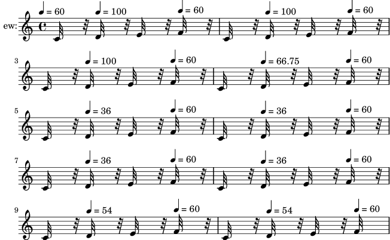
| [ << ] | [Top][Contents] | [ >> ] |
| [ < articulate-accel-midi.ly ] | [ articulate-trill-midi.ly > ] |
articulate-repeat-midi.ly
\articulate correctly handles repeats
with alternatives. They are played in the same order as their
visual rendition suggests.
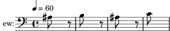
| [ << ] | [Top][Contents] | [ >> ] |
| [ < articulate-repeat-midi.ly ] | [ beat-structure-by-metronome-12-8-midi.ly > ] |
articulate-trill-midi.ly
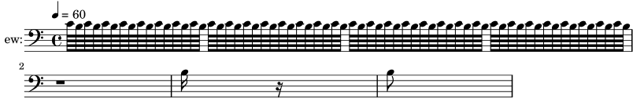
| [ << ] | [Top][Contents] | [ >> ] |
| [ < articulate-trill-midi.ly ] | [ beat-structure-by-metronome-8-8-midi.ly > ] |
beat-structure-by-metronome-12-8-midi.ly
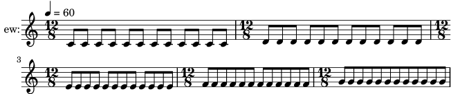
| [ << ] | [Top][Contents] | [ >> ] |
| [ < beat-structure-by-metronome-12-8-midi.ly ] | [ crescendo-gap-compatible-target-midi.ly > ] |
beat-structure-by-metronome-8-8-midi.ly
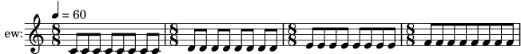
| [ << ] | [Top][Contents] | [ >> ] |
| [ < beat-structure-by-metronome-8-8-midi.ly ] | [ crescendo-return-crescendo-midi.ly > ] |
crescendo-gap-compatible-target-midi.ly
![[image of music]](f9/lily-8c7ee83d.png)
| [ << ] | [Top][Contents] | [ >> ] |
| [ < crescendo-gap-compatible-target-midi.ly ] | [ crescendo-return-louder-target-midi.ly > ] |
crescendo-return-crescendo-midi.ly
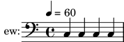
| [ << ] | [Top][Contents] | [ >> ] |
| [ < crescendo-return-crescendo-midi.ly ] | [ crescendo-return-softer-target-midi.ly > ] |
crescendo-return-louder-target-midi.ly
![[image of music]](c0/lily-fc247c68.png)
| [ << ] | [Top][Contents] | [ >> ] |
| [ < crescendo-return-louder-target-midi.ly ] | [ crescendo-return-unspecified-target-midi.ly > ] |
crescendo-return-softer-target-midi.ly
![[image of music]](60/lily-6bd4b609.png)
| [ << ] | [Top][Contents] | [ >> ] |
| [ < crescendo-return-softer-target-midi.ly ] | [ crescendo-single-compatible-target-midi.ly > ] |
crescendo-return-unspecified-target-midi.ly
![[image of music]](39/lily-9531151b.png)
| [ << ] | [Top][Contents] | [ >> ] |
| [ < crescendo-return-unspecified-target-midi.ly ] | [ crescendo-single-unspecified-target-midi.ly > ] |
crescendo-single-compatible-target-midi.ly
![[image of music]](c5/lily-4787a6c7.png)
| [ << ] | [Top][Contents] | [ >> ] |
| [ < crescendo-single-compatible-target-midi.ly ] | [ decrescendo-multiple-compatible-target-midi.ly > ] |
crescendo-single-unspecified-target-midi.ly
![[image of music]](02/lily-ad203084.png)
| [ << ] | [Top][Contents] | [ >> ] |
| [ < crescendo-single-unspecified-target-midi.ly ] | [ decrescendo-single-contrary-target-midi.ly > ] |
decrescendo-multiple-compatible-target-midi.ly
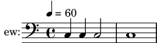
| [ << ] | [Top][Contents] | [ >> ] |
| [ < decrescendo-multiple-compatible-target-midi.ly ] | [ dynamic-initial-midi.ly > ] |
decrescendo-single-contrary-target-midi.ly
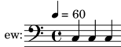
| [ << ] | [Top][Contents] | [ >> ] |
| [ < decrescendo-single-contrary-target-midi.ly ] | [ dynamic-voices-sequential-midi.ly > ] |
dynamic-initial-midi.ly
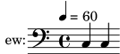
| [ << ] | [Top][Contents] | [ >> ] |
| [ < dynamic-initial-midi.ly ] | [ dynamic-voices-simultaneous-midi.ly > ] |
dynamic-voices-sequential-midi.ly
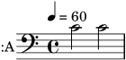
| [ << ] | [Top][Contents] | [ >> ] |
| [ < dynamic-voices-sequential-midi.ly ] | [ key-initial-midi.ly > ] |
dynamic-voices-simultaneous-midi.ly
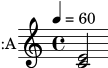
| [ << ] | [Top][Contents] | [ >> ] |
| [ < dynamic-voices-simultaneous-midi.ly ] | [ key-option-all-staves-midi.ly > ] |
key-initial-midi.ly
keys work in MIDI, this is d-minor
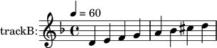
| [ << ] | [Top][Contents] | [ >> ] |
| [ < key-initial-midi.ly ] | [ key-option-midi.ly > ] |
key-option-all-staves-midi.ly
Midi2ly –key works on all staves, this is G major (–key=1)
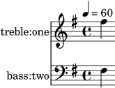
| [ << ] | [Top][Contents] | [ >> ] |
| [ < key-option-all-staves-midi.ly ] | [ lyric-combine-switch-voice-midi.ly > ] |
key-option-midi.ly
midi2ly’s option --key works, this is F major.
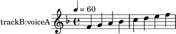
| [ << ] | [Top][Contents] | [ >> ] |
| [ < key-option-midi.ly ] | [ lyric-repeat-count-midi.ly > ] |
lyric-combine-switch-voice-midi.ly
It is possible to switch the voice that \lyricsto
follows.
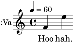
| [ << ] | [Top][Contents] | [ >> ] |
| [ < lyric-combine-switch-voice-midi.ly ] | [ lyric-tie-midi.ly > ] |
lyric-repeat-count-midi.ly
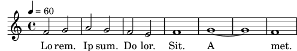
| [ << ] | [Top][Contents] | [ >> ] |
| [ < lyric-repeat-count-midi.ly ] | [ lyrics-addlyrics-midi.ly > ] |
lyric-tie-midi.ly
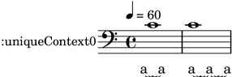
| [ << ] | [Top][Contents] | [ >> ] |
| [ < lyric-tie-midi.ly ] | [ midi-overlapping-notes-midi.ly > ] |
lyrics-addlyrics-midi.ly
Lyrics are preserved
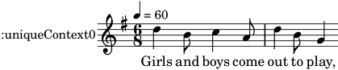
| [ << ] | [Top][Contents] | [ >> ] |
| [ < lyrics-addlyrics-midi.ly ] | [ midi-polymeter-midi.ly > ] |
midi-overlapping-notes-midi.ly
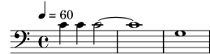
| [ << ] | [Top][Contents] | [ >> ] |
| [ < midi-overlapping-notes-midi.ly ] | [ midi2ly-long-notes-midi.ly > ] |
midi-polymeter-midi.ly
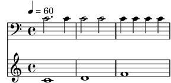
| [ << ] | [Top][Contents] | [ >> ] |
| [ < midi-polymeter-midi.ly ] | [ music-after-fine-warning-midi.ly > ] |
midi2ly-long-notes-midi.ly
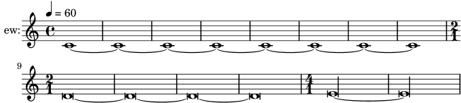
| [ << ] | [Top][Contents] | [ >> ] |
| [ < midi2ly-long-notes-midi.ly ] | [ pan-position-midi.ly > ] |
music-after-fine-warning-midi.ly
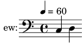
| [ << ] | [Top][Contents] | [ >> ] |
| [ < music-after-fine-warning-midi.ly ] | [ partcombine-midi.ly > ] |
pan-position-midi.ly
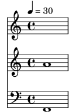
| [ << ] | [Top][Contents] | [ >> ] |
| [ < pan-position-midi.ly ] | [ performance-name-utf8-midi.ly > ] |
partcombine-midi.ly
PartCombined music is preserved
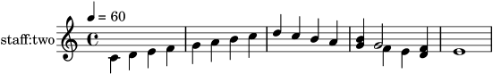
| [ << ] | [Top][Contents] | [ >> ] |
| [ < partcombine-midi.ly ] | [ quantize-duration-2-midi.ly > ] |
performance-name-utf8-midi.ly
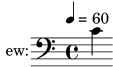
| [ << ] | [Top][Contents] | [ >> ] |
| [ < performance-name-utf8-midi.ly ] | [ quantize-duration-midi.ly > ] |
quantize-duration-2-midi.ly
midi2ly’s option --duration-quant preserves first note length (16).
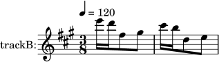
| [ << ] | [Top][Contents] | [ >> ] |
| [ < quantize-duration-2-midi.ly ] | [ quantize-start-midi.ly > ] |
quantize-duration-midi.ly
midi2ly’s option --duration-quant quantizes durations of notes.
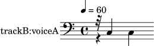
| [ << ] | [Top][Contents] | [ >> ] |
| [ < quantize-duration-midi.ly ] | [ rehearsal-mark-midi.ly > ] |
quantize-start-midi.ly
midi2ly’s option --start-quant quantizes start of notes.
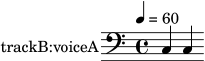
| [ << ] | [Top][Contents] | [ >> ] |
| [ < quantize-start-midi.ly ] | [ repeat-segno-midi.ly > ] |
rehearsal-mark-midi.ly
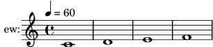
| [ << ] | [Top][Contents] | [ >> ] |
| [ < rehearsal-mark-midi.ly ] | [ rest-dynamic-midi.ly > ] |
repeat-segno-midi.ly
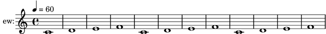
| [ << ] | [Top][Contents] | [ >> ] |
| [ < repeat-segno-midi.ly ] | [ rest-midi.ly > ] |
rest-dynamic-midi.ly
LilyPond respects rests, also when there are dynamics
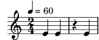
| [ << ] | [Top][Contents] | [ >> ] |
| [ < rest-dynamic-midi.ly ] | [ satb-template-on-two-staves-with-verses-midi.ly > ] |
rest-midi.ly
midi2ly identifies rests
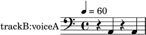
| [ << ] | [Top][Contents] | [ >> ] |
| [ < rest-midi.ly ] | [ satb-template-with-keyboard-reduction-midi.ly > ] |
satb-template-on-two-staves-with-verses-midi.ly
The printed output should have a one-measure SATB score on two staves with five verses and piano accompaniment.
The MIDI output should include an extra beat of silence where the printed output has a caesura mark.
| [ << ] | [Top][Contents] | [ >> ] |
| [ < satb-template-on-two-staves-with-verses-midi.ly ] | [ section-label-midi.ly > ] |
satb-template-with-keyboard-reduction-midi.ly
The printed output should have a one-measure SATB score on four staves with lyrics and a keyboard reduction.
The MIDI output should not include the keyboard reduction. It should include an extra beat of silence where the printed output has a caesura mark.
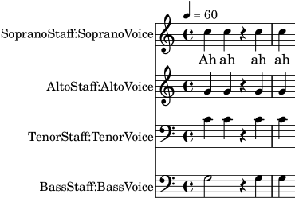
| [ << ] | [Top][Contents] | [ >> ] |
| [ < satb-template-with-keyboard-reduction-midi.ly ] | [ sequence-name-midi.ly > ] |
section-label-midi.ly
![[image of music]](67/lily-708c552e.png)
| [ << ] | [Top][Contents] | [ >> ] |
| [ < section-label-midi.ly ] | [ sequence-name-scoping-midi.ly > ] |
sequence-name-midi.ly
The MIDI sequence generated from a score should get its name
from the title defined in the score’s \header block (if any).
The title used for layout can be overridden for MIDI output by
specifying a separate midititle in the \header block.
If the score does not define a title of its own, and has no enclosing
\bookpart, \book, or top-level scope with a \header
block that defines a title, either, the MIDI sequence should get the
default name.
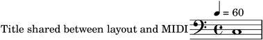
| [ << ] | [Top][Contents] | [ >> ] |
| [ < sequence-name-midi.ly ] | [ spacer-no-notes-midi.ly > ] |
sequence-name-scoping-midi.ly
If a score has a \header block which defines a title,
this title should override any title defined in a \header block
of the score’s enclosing \bookpart or \book (or a title
defined in a top-level \header block) when naming the MIDI
sequence generated from the score. Otherwise, if the score has no title
defined, the MIDI sequence generated from the score should get named
using the title defined in the \header block of the nearest
enclosing \bookpart, \book, or top-level scope that
contains a title definition.
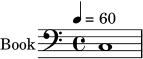
| [ << ] | [Top][Contents] | [ >> ] |
| [ < sequence-name-scoping-midi.ly ] | [ staff-map-instrument-midi.ly > ] |
spacer-no-notes-midi.ly
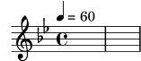
| [ << ] | [Top][Contents] | [ >> ] |
| [ < spacer-no-notes-midi.ly ] | [ staff-map-voice-midi.ly > ] |
staff-map-instrument-midi.ly
Midi2ly remaps voices correctly to staves in MIDI-files that use instrument<->channel mapping when combined with voice<->track mapping. TODO: pianostaff
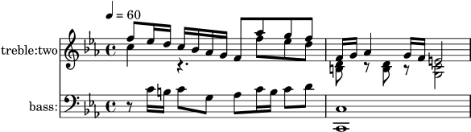
| [ << ] | [Top][Contents] | [ >> ] |
| [ < staff-map-instrument-midi.ly ] | [ tempo-midi.ly > ] |
staff-map-voice-midi.ly
Midi2ly remaps voices correctly to staves in MIDI-files that use voice<->channel mapping when combined with staff<->track mapping. TODO: pianostaff
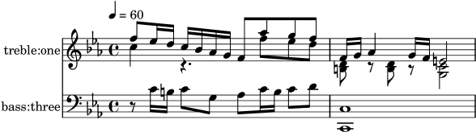
| [ << ] | [Top][Contents] | [ >> ] |
| [ < staff-map-voice-midi.ly ] | [ time-signature-alternating-fraction-midi.ly > ] |
tempo-midi.ly
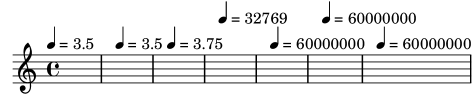
| [ << ] | [Top][Contents] | [ >> ] |
| [ < tempo-midi.ly ] | [ time-signature-midi.ly > ] |
time-signature-alternating-fraction-midi.ly
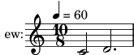
| [ << ] | [Top][Contents] | [ >> ] |
| [ < time-signature-alternating-fraction-midi.ly ] | [ time-signature-unsupported-midi.ly > ] |
time-signature-midi.ly
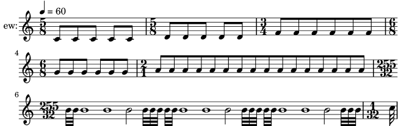
| [ << ] | [Top][Contents] | [ >> ] |
| [ < time-signature-midi.ly ] | [ varcoda-midi.ly > ] |
time-signature-unsupported-midi.ly
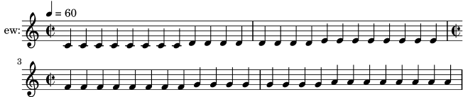
| [ << ] | [Top][Contents] | [ >> ] |
| [ < time-signature-unsupported-midi.ly ] | [ voice-2-midi.ly > ] |
varcoda-midi.ly
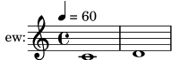
| [ << ] | [Top][Contents] | [ >> ] |
| [ < varcoda-midi.ly ] | [ voice-4-midi.ly > ] |
voice-2-midi.ly
midi2ly maps two voices nicely on one staff as \voiceOne, \voiceTwo
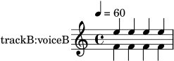
| [ << ] | [Top][Contents] | [ >> ] |
| [ < voice-2-midi.ly ] | [ voice-5-midi.ly > ] |
voice-4-midi.ly
midi2ly maps four voices nicely on one staff as \voiceOne, \voiceTwo, \voiceThree, \voiceFour
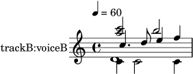
| [ << ] | [Top][Contents] | [ >> ] |
| [ < voice-4-midi.ly ] | [ > ] |
voice-5-midi.ly
midi2ly still produces output for a staff with five voices. However, in such cases, most probably the the correct \voiceOne, \voiceX... mapping is lost.
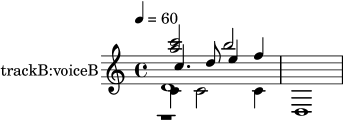